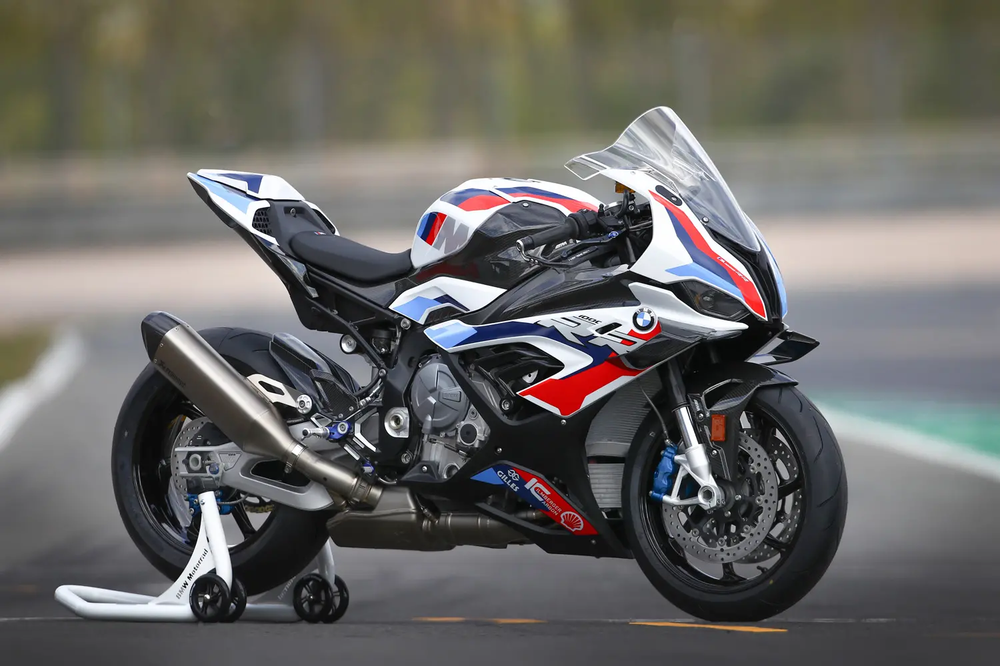
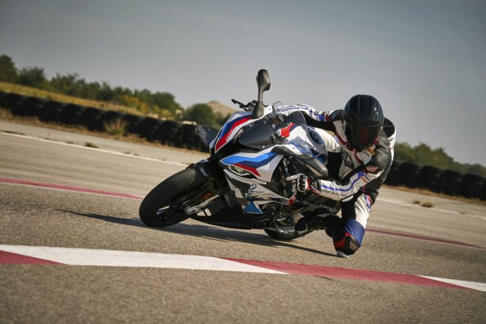
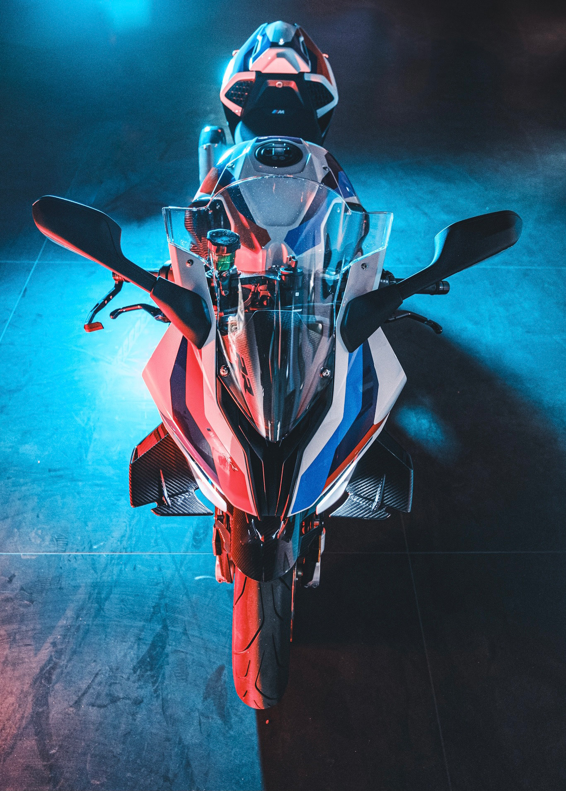
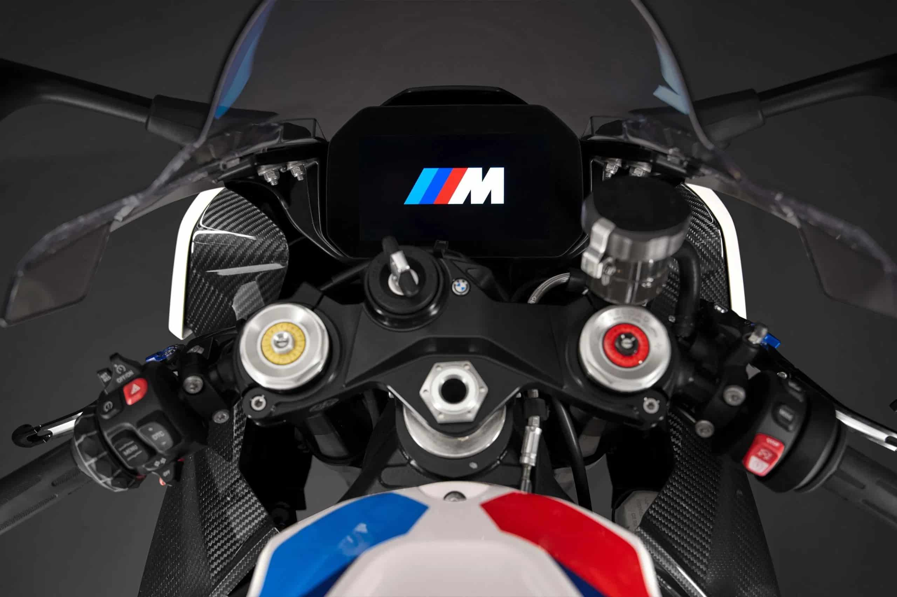
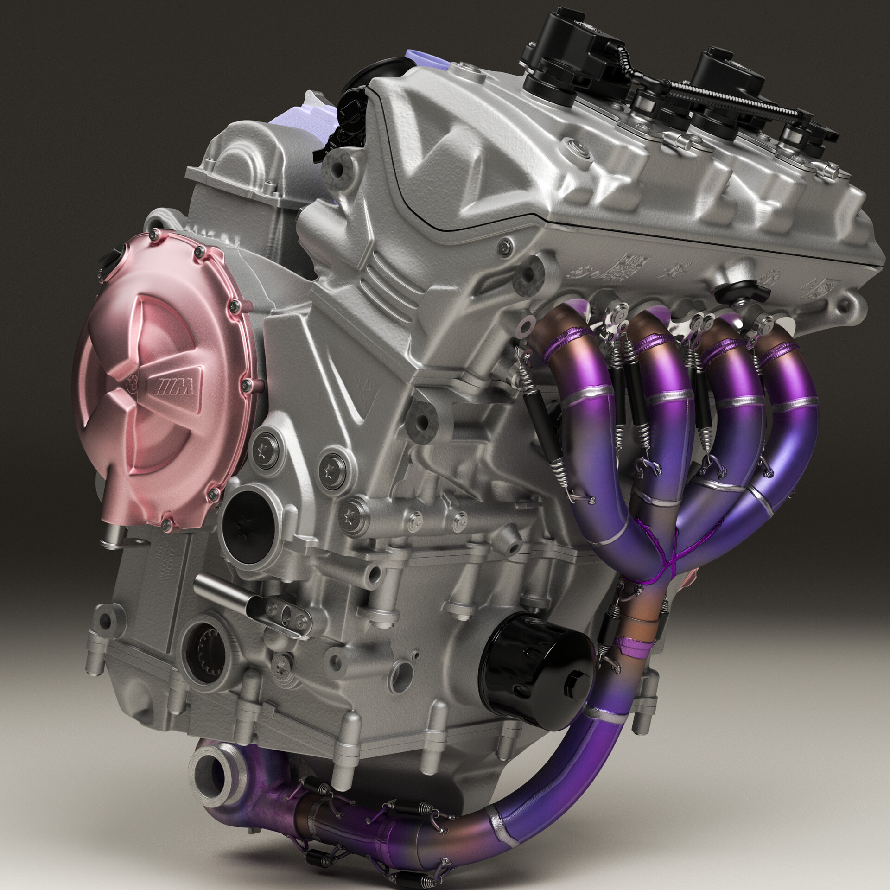

bmw m1000rr
bmw m1000rr

|
Make Model |
bmw m1000rr |
|
price |
39 000 € |
|
Year |
2021 |
|
Production |
500 units |
|
Engine |
Four stroke, transverse 4 cylinder, DOHC, 4 titanium valves per cylinder and BMW shiftcam |
|
Capacity |
999 cc / 60.9 cu-in |
|
Bore x Stroke |
80 x 49.7 mm |
|
Compression Ratio |
13.5:1 |
|
Cooling System |
Water/oil cooled |
|
Exhaust |
Titanium Akrapovič |
|
Induction |
Programmed Dual Stage Fuel Injection (PGM-DSFI) with 52mm throttle bodies, Denso 12-hole injectors |
|
Ignition |
Digital transistorized with electronic advance |
|
Battery |
12 v/5 ah, lithium-oin |
|
Max Power |
212 hp / 156kW @ 14500 |
|
Max Torque |
113 Nm / 83 lb-ft @ 11000 |
|
Clutch |
Multiplate clutch in oil bath, slipper clutch |
|
Transmission |
Constant-mesh 6-speed gearbox with straight cut gears |
|
Final Drive |
Chain 525 17/46 |
|
Frame |
Bridge-type frame, cast aluminium, load-bearing engine |
|
Front Suspension |
Upside-down telescopic fork with a diameter of 45 mm, adjustable compression and rebound stage, adjustable preload |
|
Front Wheel Travel |
120 mm / 4.7 in |
|
Rear Suspension |
Aluminium swing arm, compression and rebound damping adjustable, adjustable preload |
|
Rear Wheel Travel |
117 mm / 4.6 in |
|
Front Brakes |
2x 320mm discs, M Brake 4-piston fixed caliper |
|
Rear Brakes |
Single 220 mm disk, 2-piston fixed caliper |
|
ABS System |
BMW Motorrad ABS Pro (part integral), modes to select |
|
Wheels |
M carbon wheels |
|
Front Tyre |
120/70ZR17 |
|
Rear Tyre |
200/55ZR17 |
|
steering head angle |
66.4° |
|
Trail |
101.6 mm / 4 in |
|
Dimensions |
Length 2073 mm / 81.6 in |
|
Seat Height |
833 mm / 32.6 in |
|
Wet Weight |
192 kg / 443 lbs |
|
Fuel Capacity |
16.5 Litres / 4.4 US gal |
BMW Motorrad already introduced the successful M vehicle offer strategy at the end of 2018 for motorcycles and has been offering M optional equipment and M performance parts ever since. With the new BMW M 1000 RR – in the following referred to as M RR in short – the first M model from BMW Motorrad based on the S 1000 RR (RR for short) is now celebrating its world premiere. BMW Motorrad follows the philosophy of the strongest letter in the world: M stands worldwide for success in motor racing and the fascination of high-performance BMW models and is aimed at customers with particularly high demands relating to performance, exclusiveness and individuality.
With an engine output of 156 kW (212 HP), a DIN vehicle kerb weight of only 192 kg and a suspension and aerodynamics designed for maximum race track performance, the new M RR meets the main expectations in the top segment of Superbikes.
M RR four-cylinder engine based on the RR engine for racing sport. More peak power and increased maximum engine speed.
The new M RR uses a water-cooled four-cylinder in-line engine based on the RR power train with BMW ShiftCam technology for varying valve timing and valve lift that has been modified comprehensively in the direction of a racing sport engine. It achieves its peak output of 156 kW (212 HP) at 14,500 rpm. The maximum torque of 113 Nm is applied at 11,000 rpm. In addition to a maximum speed increased to 15,100 rpm, the M RR engine has extensive technical optimisations such as new 2-ring forged pistons from Mahle, adapted combustion chambers, compression increased to 13.5, longer and lighter titanium connecting rods from Pankl, slimmer and lighter rocker arms, fully machined intake ports with new duct geometry as well as optimisations on camshafts and intake area. The lightweight exhaust system is also made of titanium. The new M RR engine is even more powerful than the RR power train in the range from 6,000 rpm to 15,100 rpm, a range that is particularly relevant for race track driving dynamics, but without losing its qualities as a fascinating source of power for sporty driving on country roads.
M winglets and high windscreen: Braking later and accelerating earlier thanks to the aerodynamic downforce without any reduction in maximum speed.
The aerodynamics were a decisive point in the technical specifications for development work of the M RR. In addition to a maximum speed that is as high as possible and absolutely necessary for winning races, there was another objective in the technical specifications of the M RR: to establish the best possible contact of the wheels with the road – especially when accelerating. The M winglets on the trim front, which were developed during intensive testing on the race track and in the BMW Group’s wind tunnel and are made of clear-coat carbon, take this into account as they produce aerodynamic downforce and thus additional wheel loads according to the speed. The additional wheel load on the front wheel counteracts wheelie inclination, traction control regulates less, more driving power is converted into acceleration and the driver achieves faster lap times. The effect of the winglets is also noticeable in curves and when braking, the downforce allows later braking and ensures increased cornering stability.
Born for racing: M design and dynamic form language of the M RR indicate ultimate race track performance.
The new M RR emphasises its racing genes with the light white solid paint/M
Sport colour scheme in the basic colours light blue, dark blue and red. Further
features of the M RR are the engine covers in granite grey and the fuel filler
cap painted black.
Uncompromising in design and technology: The M RR with M competition package.
For those who are still not satisfied with the new M RR in standard trim, the
M competition package provides a fascinating mixture of classy components for
the racing technology gourmet and the aesthete at the same time. In addition to
the M GPS laptrigger software and the corresponding activation code, the M
competition package also includes the M milled parts package, the M carbon
package as well as a silver 220 g lighter swinging arm, the friction-optimised,
maintenance-free and DLC-coated M Endurance chain and the passenger package
including tail-hump cover.
The highlights of the new BMW M 1000 RR.
• M RR four-cylinder engine based on the RR engine for racing sport. Even more
peak power, higher torque in the medium range and 500 rpm more maximum speed.
• 156 kW output at 14 500 rpm and thus 4 kW more than in the RR. Maximum
torque of 113 Nm at 11 000 rpm.
• New 2-ring forged piston 12 g lighter, adapted combustion chamber and
compression increased to 13.5. In addition, slimmer and lighter rocker arms.
• Fully machined intake ports with new duct geometry and BMW ShiftCam
technology for varying the valve control time and valve lift.
• Titanium valves, on the exhaust side with new spring assembly, slimmer and
6 % lighter rocker arms and optimised camshafts.
• Very light, compact engine block with longer and 85 g lighter titanium
connecting rods from Pankl for reduced friction power and less weight.
• Anti-hopping clutch without self-reinforcing for optimum Launch Control.
• Optimised differentiated intake system with shorter intake funnels for
optimised gas exchange at high rotational speeds.
• New, 3,657 g lighter exhaust system with exhaust manifold, front silencer
and rear silencer made of titanium.
• M winglets and high windscreen: Braking later and accelerating earlier and
more stability when cornering thanks to the aerodynamic downforce without any
reduction in maximum speed.
• “Rain”, “Road”, “Dynamic”, “Race”“ and “Race Pro1-3” riding modes and the
latest generation of the Dynamic Traction Control (DTC) and DTC wheelie function
with 6-axle sensor box.
• Two adjustable characteristic throttle curves for optimum response
characteristics. Engine brake with threefold adjustable engine drag torque in
“Race Pro” mode.
• Shift assistant Pro for shifting gears up and down without clutch. Simple
reversibility of the shift pattern for race track use.
• Launch Control for perfect race starts and Pit-Lane-Limiter for precise
speed in the pit lane.
• Hill Start Control Pro for convenient starting on slopes.
• Chassis design trimmed for race track use with modified geometry, optimised
wheel load distribution and extended adjustability of the swinging arm pivot
point.
• Optimised upside-down fork and revised central spring strut with Full
Floater Pro kinematics.
• M brakes for the first time at BMW Motorrad: The M RR with maximum braking
performance for the race track.
• M carbon wheels: Classy high-tech components for maximum performance on
race track and road.
• Instrument cluster with large, perfectly readable 6.5-inch TFT display,
starting animation with M logo and OBD interface that can be used with
activation code for the M GPS data logger and M GPS laptrigger.
• Lightweight M battery, USB charging socket in the rear, powerful integrated
LED light units and heated grips.
• M design and dynamic form language indicate ultimate race track
performance.
• M competition package with M GPS laptrigger and activation code, M milled
parts package, M carbon package, silver, 220 g lighter swinging arm, DLC-coated
M endurance chain and passenger package including tail-hump cover.
• Comprehensive optional accessories and optional equipment ex works.